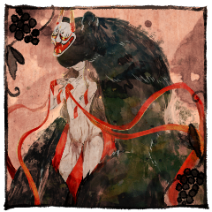
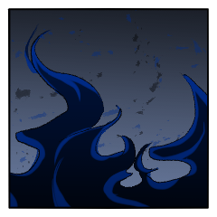
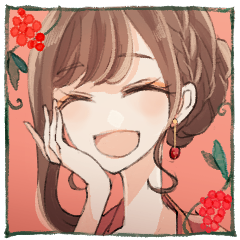

◆ラウンド５
七竈 幽
2D6>=5 （判定：分身の術） (2D6>=5) ＞ 7[3,4]
＞ 7 ＞ 成功
[ 獅子鞍 透夜 ] がダイスシンボルを公開。出目は 3 です。
[ 七竈 幽 ] がダイスシンボルを公開。出目は 4 です。
[ 七竈 蘇芳 ] がダイスシンボルを公開。出目は 3 です。
[ 七竈 幽 ] がダイスシンボルを公開。出目は 2 です。
[ 懸鉤子 蜜 ] がダイスシンボルを公開。出目は 1 です。
GM
◆ラウンド５
プロット４：幽 ３：透夜、蘇芳 １：蜜
プロット４ 行動：七竈 幽
懸鉤子 蜜
2D6-2>=9 （判定：言霊術） (2D6-2>=9) ＞
8[2,6]-2 ＞ 6 ＞ 失敗
獅子鞍 透夜
2D6-2>=9 （判定：見敵術） (2D6-2>=9) ＞
8[2,6]-2 ＞ 6 ＞ 失敗
GM
それではこのままでは透夜は３点のランダム分野ダメージ。
GM
はい。蜜の絶対防御は衣装術でくらましがついて-2。
七竈 蘇芳
2D6-2>=7 （判定：登術） (2D6-2>=7) ＞
4[2,2]-2 ＞ 2 ＞ 失敗
GM
ここでですか。いいでしょう、振り直しをどうぞ。
七竈 蘇芳
2D6-2>=7 （判定：登術） (2D6-2>=7) ＞
7[2,5]-2 ＞ 5 ＞ 失敗
[ 七竈 蘇芳 ] 忍具 : 1 → 0
[ 七竈 幽 ] 体術 : 0 → 0
[ 七竈 幽 ] 器術 : 0 → 1
[ 七竈 幽 ] 忍具 : 1 → 0
七竈 幽
2D6-2+3>=9 （判定：火術） (2D6-2+3>=9) ＞
8[2,6]-2+3 ＞ 9 ＞ 成功
七竈 蘇芳
2D6>=6 （判定：登術） (2D6>=6) ＞ 7[3,4]
＞ 7 ＞ 成功
GM
幽はクリティカルヒットによる喪失分野決定の3D6を。
七竈 幽
3d6 (3D6) ＞
8[2,2,4] ＞ 8
[ 獅子鞍 透夜 ] 謀術 : 1 → 0
[ 獅子鞍 透夜 ] 戦術 : 1 → 0
[ 獅子鞍 透夜 ] 忍具 : 1 → 0
七竈 幽
炎のように揺らめき移ろって、同じ太刀筋を二度取ることはない。
七竈 蘇芳
幽本人ではなく、その太刀筋を守るように、影が這う。
七竈 幽
胸ではない。そこにもう心臓のないことを知っている。
獅子鞍 透夜
銃を取り落とした左手で脇腹を抑え、膝をつく。
獅子鞍 透夜
深く息を吐いて痛みを内側へと抑え込み
獅子鞍 透夜
2d6 (2D6) ＞
6[1,5] ＞ 6
七竈 蘇芳
2D6 (2D6) ＞
7[2,5] ＞ 7
プロット３ 行動：獅子鞍 透夜
GM
秘密を自ら開示し、回想シーン演出を行ってください。
獅子鞍 透夜
あの日から俺はそう名乗るように言われ、『宝珠・迦具土』をその身に受けた。
獅子鞍 透夜
全身が燃え上がり、灰になる夢を見た。
夜中に何度も魘された。
獅子鞍 透夜
その『宝珠・迦具土』を守るため、厳しい修行をさせられた。
獅子鞍 透夜
鞍馬にあって異端と呼ばれる銃は、手に馴染んだ。
獅子鞍 透夜
守るため、殺すため、技を磨き続け、死ぬような訓練を。
獅子鞍 透夜
だから、ここで死ぬわけにはいかない。
獅子鞍 透夜
俺達には、まだ生きたいって思える理由がたくさんある！
獅子鞍 透夜
心臓である『宝珠・迦具土』を一度でも失った場合、
あなたはエンディングフェイズで死亡する。
『宝珠・迦具土』と一体化しているため、
あなたは『炎刃』を使用することが出来る。
鞍馬神流はあなたを餌に火神をおびき出そうとしている。
だが、『宝珠・迦具土』を使うことは危険な賭けでもある。
クライマックスフェイズ終了時に火神が死亡していなかった場合、
鞍馬神流の手によってあなたは『宝珠・迦具土』ごと封印される。
「君を自由にする」
PC4はあなたにそう約束してくれた。
相手が約束を守ってくれるならば、
あなたは自らの使命を「自由になる」に変更しても構わない。
GM
はい。回想シーン効果により、命中判定に+3の修正です。鬼影と合わせて-2+3。
獅子鞍 透夜
2D6-2+3>=5 （判定：絡繰術） (2D6-2+3>=5) ＞
8[2,6]-2+3 ＞ 9 ＞ 成功
七竈 蘇芳
2D6>=9 （判定：手裏剣術） (2D6>=9) ＞
6[1,5] ＞ 6 ＞ 失敗
GM
命中ですね。零討が乗って2点の射撃戦ダメージですが。
七竈 蘇芳
奥義使用します。絶対防御/くらまし/防御低下
獅子鞍 透夜
2D6-2>=6 （判定：刀術） (2D6-2>=6) ＞
8[3,5]-2 ＞ 6 ＞ 成功
プロット３ 行動：七竈 蘇芳
七竈 蘇芳
2D6>=5 （判定：手裏剣術） (2D6>=5) ＞ 6[2,4]
＞ 6 ＞ 成功
獅子鞍 透夜
2D6>=6 （判定：砲術） (2D6>=6) ＞ 8[4,4]
＞ 8 ＞ 成功
獅子鞍 透夜
黄金色のマイクロミサイルが発射される。
それは、透夜の背後ではなく……離れた藪から。
獅子鞍 透夜
これは、獅子鞍に教わったものではない。
七竈 蘇芳
目の前の透夜の背から放たれる砲弾を警戒した。
獅子鞍 透夜
血に流れる記憶、透夜が磨き上げた技。
七竈 蘇芳
その一瞬は、高速機動の中にあって明暗を分ける。
獅子鞍 透夜
恨みではない。妬みでもない。これは……
七竈 蘇芳
血とも影ともつかぬ、粘ついた闇が飛び散った。
七竈 蘇芳
もう、爆撃を吞み込むことは出来なかった。
獅子鞍 透夜
胸元に、『宝珠・迦具土』に、銃が突きつけられる。
およそ通常の戦闘では当たらないだろう、大口径の拳銃。
七竈 蘇芳
ばたつく。恥も外聞もなく、みっともない、最後の抵抗。
獅子鞍 透夜
「助けてくれてありがとうよ、"蘇芳さん"」
七竈 蘇芳
そうしておけば、こんな思いをさせることもなかったのに。
七竈 蘇芳
魂を結ぶ約束を、自らで破ることはできなかった。
[ 七竈 蘇芳 ] 器術 : 1 → 0
[ 七竈 蘇芳 ] 体術 : 1 → 0
獅子鞍 透夜
恨みはない。されど、恨まれる覚悟なら……
プロット１ 行動：懸鉤子 蜜
懸鉤子 蜜
まだ、啼沢女がそこにあること。
それはこの戦いがまだ終わらないことを意味する。
懸鉤子 蜜
【黄泉軍】を使用します。
対象は七竈 幽。
懸鉤子 蜜
2D6>=5 （判定：傀儡の術） (2D6>=5) ＞ 5[1,4]
＞ 5 ＞ 成功
七竈 幽
2D6>=6 （判定：分身の術） (2D6>=6) ＞
4[1,3] ＞ 4 ＞ 失敗
懸鉤子 蜜
KWT 怪変調表(2) ＞
マヒ:修得している特技の中からランダムに一つを選び、その特技が使用不能になる。この効果は、修得している特技の数だけ累積する。各サイクルの終了時に、《身体操術l》で行為判定を行い、成功するとこの変調はすべて無効化される。
GM
蜜は1D6をお願いします。キャラクターシート右側の特技一覧の上から1D6番目で裁定。
[ 七竈 幽 ] 器術 : 1 → 0
[ 七竈 幽 ] 戦術 : 1 → 0

懸鉤子 蜜
この戦いを終わらせること。
それは『宝珠・迦具土』と『神鏡・啼沢女』にまつわるすべてに、終止符を打つこと。
懸鉤子 蜜
一族の業火を、とこしえに消し去るために。
魂をもって怨念に、妄執にこたえること。
懸鉤子 蜜
幽くん。
ここからは、君を弔うための戦い。
懸鉤子 蜜
あの日、業火に焼かれた。
透夜の、結の人生を。
七竈 幽
深く抉れた傷口から、ぼたぼたと血が溢れる。
◆ラウンド６
七竈 幽
2D6>=5 （判定：分身の術） (2D6>=5) ＞
3[1,2] ＞ 3 ＞ 失敗
GM
ラウンド６，プロットオープンをお願いします！
[ 獅子鞍 透夜 ] がダイスシンボルを公開。出目は 4 です。
[ 懸鉤子 蜜 ] がダイスシンボルを公開。出目は 3 です。
[ 七竈 幽 ] がダイスシンボルを公開。出目は 3 です。
プロット４ 行動：獅子鞍 透夜
GM
OK。接近戦攻撃に組み合わせての陽炎ですね。
獅子鞍 透夜
2D6>=5 （判定：刀術） (2D6>=5) ＞
10[5,5] ＞ 10 ＞ 成功
獅子鞍 透夜
2D6>=5 （判定：縄術） (2D6>=5) ＞ 7[2,5]
＞ 7 ＞ 成功
GM
幽は-2をつけて縄術から回避判定を。本当は黄泉軍によりさらに-1がついた。
七竈 幽
2D6-2>=10 （判定：分身の術） (2D6-2>=10) ＞
10[4,6]-2 ＞ 8 ＞ 失敗
GM
戦術、潰れていますね。幽は任意の分野を潰してください。
[ 七竈 幽 ] 忍術 : 1 → 0

獅子鞍 透夜
青い炎と黒い炎、2つの炎が巻き起こす熱気にその身を眩ませる。
獅子鞍 透夜
それは、先ほど幽が使って見せたのと同じ。
獅子鞍 透夜
夜の闇、月の雲に隠れるのに乗じて鋼縄を脳天から打ち下ろす。
七竈 幽
霞む視界で、闇に紛れた攻撃を捉えることは叶わず。
七竈 幽
縄は頭の後ろを掠め、背中を強かに打ち付ける。
獅子鞍 透夜
「俺が、てめーの言うこと聞かなきゃなんねーんだよ」
獅子鞍 透夜
無傷ではない。
切られた脇腹はかろうじて出血を止めている。
獅子鞍 透夜
「死にたきゃ勝手に死ねよ。そこの"蘇芳さん"が、それを望んでると思うならな」
七竈 幽
「言われずとも、オレはオレの好きにする」
七竈 幽
2d6 (2D6) ＞
12[6,6] ＞ 12
懸鉤子 蜜
2d6 (2D6) ＞
7[3,4] ＞ 7
懸鉤子 蜜
【接近戦攻撃】を使用します。
対象は七竈 幽。
プロット３ 行動：懸鉤子 蜜
懸鉤子 蜜
2D6>=5 （判定：怪力） (2D6>=5) ＞ 6[1,5]
＞ 6 ＞ 成功
七竈 幽
2D6-1>=12 （判定：憑依術） (2D6-1>=12) ＞
8[2,6]-1 ＞ 7 ＞ 失敗
GM
忍具も使い切っている。幽は接近戦１点と射撃戦２点の合計３点ダメージを受けて脱落です。
プロット３ 行動：七竈 幽
七竈 幽
クリティカルヒット/くらまし/威力低下/憑依術
七竈 幽
2D6+2>=16 （判定：憑依術） (2D6+2>=16) ＞
11[5,6]+2 ＞ 13 ＞ 失敗
懸鉤子 蜜
帯締めを解いた女の腕が、見る間にその手に抱く、『神鏡・啼沢女』へ伸びる。
懸鉤子 蜜
素手の指先が、鏡のような刀身を握りこむ。
皮膚いちまいと身に纏った気でもって。
懸鉤子 蜜
火神へその神気を与えぬように押し留める。
懸鉤子 蜜
あなたは、その腕を代償にするんでしょう？
懸鉤子 蜜
知ってる、私も。
あなたと同じ立場なら。
獅子鞍 透夜
呼びかける、その手には広い銃口を持った短銃。
獅子鞍 透夜
「そこで見てろよ。その覚悟がないなら……」
獅子鞍 透夜
銃口から放たれた網が幽の身体を絡めとる。
GM
プロット３が終了。同時行動による生命力喪失の処理を行います。
[ 七竈 幽 ] 妖術 : 1 → 0
七竈 幽
身を焦がし、魂を焦がし、鋼線を溶かして、
七竈 蘇芳
意識はほとんど潰えていた。名を呼ぶことすら覚束ない。
それでも炎に包まれれば、僅かに。微かに。指先が動く。
七竈 蘇芳
やわらかい熱。あの日炎の荒野で拾い上げたそのとき、そのままの。
七竈 蘇芳
それは七竈蘇芳が初めて知った、人間の温もり。
七竈 蘇芳
ゆう、ゆう、と、うわごとのようにそればかり、唇が動く。
七竈 幽
【秘密：七竈 幽】
あなたの命を繋いでいるのは七竈 蘇芳に与えられた『神鏡・啼沢女』の力によるものだ。
七竈 蘇芳に助けられるまでの記憶を失っているあなたにとって、七竈
蘇芳は何者にも代えがたい存在だ。
あなたの本当の使命は『七竈
蘇芳に恩を返す』ことである。
しかし、あなたの肉体は死した不知火の一族の業火によって支配されている。
この支配を脱するまで、あなたの使命は『獅子鞍
透夜を殺す』となる。
支配されている間、戦闘での戦果はGMが決定する。
七竈 幽
蘇芳が幽を守り、包んできてくれたように。
七竈 蘇芳
謝るのならばこちらのほう、お前を、自分自身を守ることのできなかった、俺が。
七竈 蘇芳
咳き込むように言葉になる。10年間数えきれないほど呼んだ名前。
七竈 蘇芳
手を握りしめる。そこにお前の手がなくても、きつく、強く。
七竈 幽
応えるように、炎が蘇芳の手を包んでいる。
七竈 幽
蘇芳を包む炎が、徐々にその勢いを弱めていく。
七竈 蘇芳
揺らぎは消えず、抱きしめることもかなわず。
七竈 蘇芳
「幽が、いないと、……俺もう、さびしくて……」
七竈 幽
それでもこうして蘇芳さんの元で死ねるなら。
七竈 蘇芳
その言葉に、ほっとしたように大きく、息を吐きだして。
七竈 蘇芳
「これが、……幸せ、だったんだなあ……」
七竈 蘇芳
そこにない小さく愛しい頭を撫でるように。
七竈 蘇芳
それきり、手は落ちる。もはやその時を待つだけ。
七竈 幽
不知火の妄執ともろともに、幽火が薄れていく。
七竈 幽
最後に僅かな火の粉が、透夜の──結の耳元を掠めて。
GM
プロット３の処理が終了し、６ラウンド目が終了。
GM
クライマックスフェイズがこれにて終了します。
GM
残った二人のうち、生命力の喪失がより少ない方を勝者とします。
懸鉤子 蜜
戦果として『神鏡・啼沢女』を奪い、
脱落者 七竈 蘇芳の命を奪います。
GM
『神産みの儀式』を完成させた者は忍神として、願いを一つ叶える力を得ます。
今回は特例として、勝者の蜜ではなく透夜が忍神となることを認めます。
懸鉤子 蜜
心臓を失った獅子鞍 透夜の身体を癒し、自由な生と未来を願います。
獅子鞍 透夜
亡骸を振り返りはしない。
そもそも、既にそこにあるかも怪しい。
獅子鞍 透夜
いまだ残るのは火神。
銃を手に歩み寄る。
七竈 蘇芳
地に巨躯を投げ出して、まるで焼き付いた影のようにそこに在る。
わずかに胸が上下する。ーーまだ、息がある。
獅子鞍 透夜
血の繋がり、血縁。
幽を家族と思うのならば、この男もまた。
獅子鞍 透夜
宝珠ではない、その頭に銃口を向ける。
七竈 蘇芳
瞼を震わせ、薄らと目を開け。透夜を見る。
獅子鞍 透夜
『しぶといな』だとかいくらでも憎まれ口は思い浮かんだものだが。
七竈 蘇芳
燃えるような宝珠だけを残して影は溶け落ちた。
懸鉤子 蜜
宝珠に跪き、礼をする。
妖でも、魔でも、神と呼ばれたものだ。
懸鉤子 蜜
『宝珠・迦具土』と『神鏡・啼沢女』を揃えて、月の光の元に並べ。
懸鉤子 蜜
禊の祝詞を述べて、宝珠を割る。
いずこかに還されたそれは、在るべくして割れた。
懸鉤子 蜜
手にした面のなかに、月の光が満ちる。
今ここに降る、シノビガミの力。
懸鉤子 蜜
盃のように飲み下せば。
儀式は執り行われる。
懸鉤子 蜜
青い炎のように青い月の光が。
正しく透夜の中に満ちる。
獅子鞍 透夜
清らかなる力が波紋のように広がるのを感じる。
獅子鞍 透夜
空になった腹に、脈打つものが生まれる。
懸鉤子 蜜
いそいそと、脱ぎ捨てた服を纏い。
きゅ、と髪をまとめる。

懸鉤子 蜜
「今日の晩御飯は～特製ハンバーグドリアだぞう～！」
獅子鞍 透夜
決して2人の死を、軽んじるわけではない。
獅子鞍 透夜
それでも、幸せを願ってくれる人がいるから。
獅子鞍 透夜
神様なんて、世界で一番自由な職業じゃん！
懸鉤子 蜜
いっぱい甘えて、いっぱい自由を楽しんで。
神様になっても。とーや。
懸鉤子 蜜
あなたの自由を、心から祝福するからね。
懸鉤子 蜜
生きたいと思ってくれて。
自由になりたいって思ってくれて。
GM
神が産まれたことよりも、ずっとずっと大切なことがある。